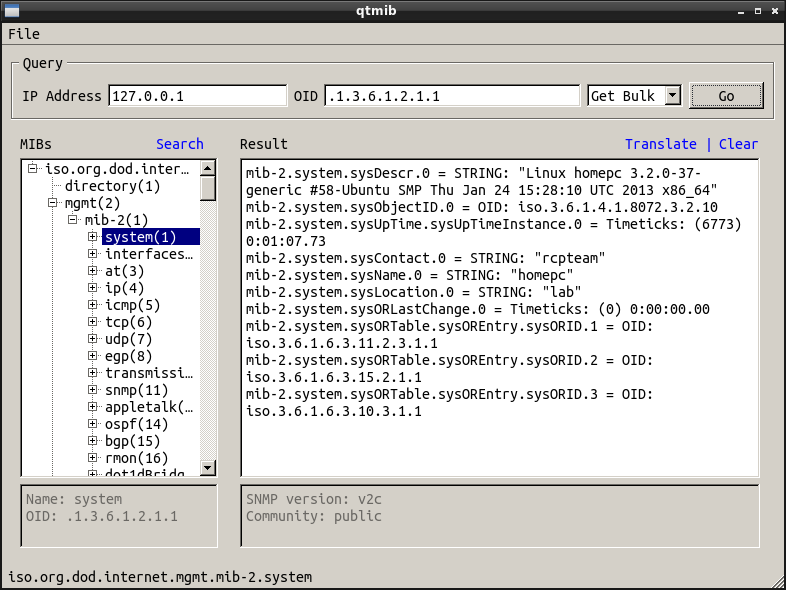

About
qtmib is an easy-to-use SNMP MIB Browser based on QT4 library. It is build as a front-end for net-snmp, and it allows the user to query any SNMP-enabled device. It implements SNMPv1 and SNMPv2c, and it is released under GPL v2 license.
qtmib supports out of the box a large number of MIBs. We are currently tracking netdisco MIB archive. A full list of supported devices is here. You can also install private MIBs by dropping them in ~/.config/qtmib/mibs directory.

Features:
- SNMP v1 and v2c
- OID/MIB translation
- large number of built-in MIBs
- user MIBs
- network discovery
- reports: system, interface, routing table, connections, process, software
News
August 2013 - Version 0.8.10 released
- connection report
- Apache and Squid MIBs
- several user interface improvements
- bug fixes
July 2013 - Version 0.8.8 released
- report support
- bug fixes
June 2013 - Version 0.8.6 released
- network discovery support
June 2013 - Version 0.8.4 released
- fixed Search button crash
June 2013 - Version 0.8.2 released
- MIB search
- man page
- fixed getnext command
- fixed private MIB loading
- other bug fixes
May 2013 - Version 0.8 released
- first beta testing version
Download
Installation
For Ubuntu 12.04 and later use the .deb package provided:
$ sudo dpkg -i qmib_X.Y.Z_1.deb
To install it from sources, download and unpack the source archive:
$ tar -xjvf qtmib-X.Y.Z.tar.bz2
$ cd qtmib-X.Y.Z
Dependencies: QT4 development libraries, net-snmp.
Compile and install the software:
$ ./configure
$ make
$ sudo make install
Support
You can reach the development team at rcpteam at yahoo dot com.
Discussions and bug reports.